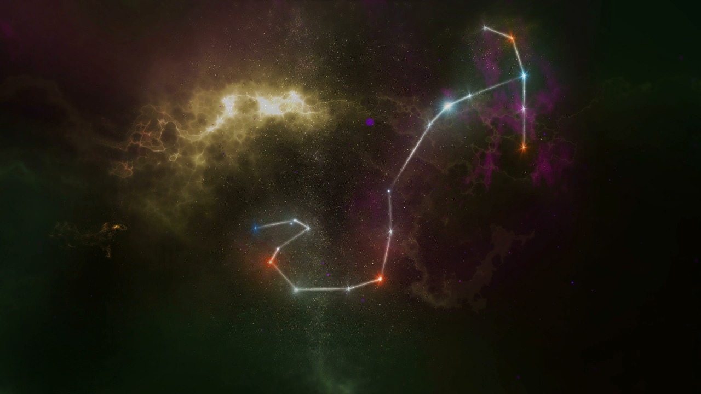
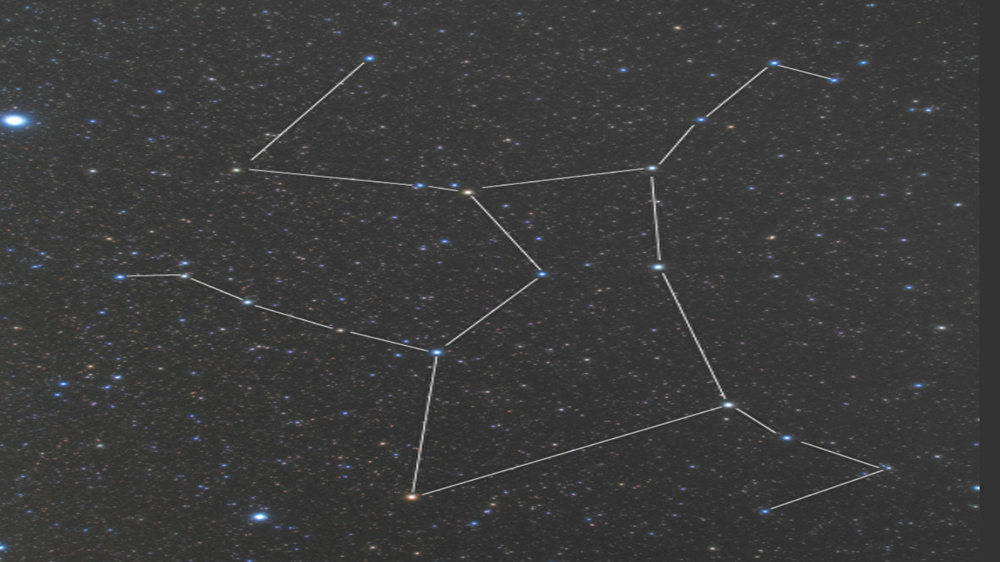
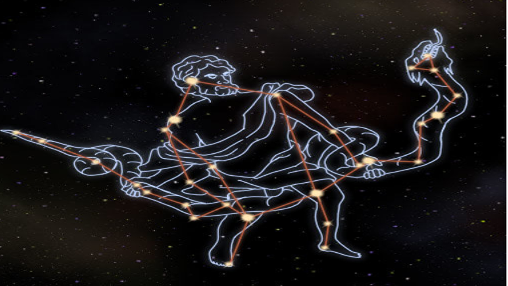

自宅にいながら、田舎の星を見よう！！
いつでもご自宅から星が見えます。
全国の天文台の天体望遠鏡とのリンクを実現。
ご自宅にいながら子供のころに見た満点の星空をご家族で味わえます。
夏の季節の夜空を彩る星たち
天の川

さそり座

ヘラクレス座

蛇使い座
特別ゲスト
マイケル・グラント博士
スタンフォード大学教授。現在は東京大学教授も兼任。専門は天文学。
幅広い見識と独創性あふれるスピーチで毎回見るものを宇宙の神秘へと誘ってくれます。
今回はオーストラリアにあるエアーズ天文台からリモートで中継参加。
日本の夜空とともに南半球の夜空についても解説していただきます。
七尾由紀
スターズ所属、声優。劇団天球劇団員。
昨年上演された「銀河鉄道の夜」は異例のロングランヒット公演となった。
その他にも「僕の火星を護って」など大人気のアニメ声優のほか、
昨年「リモート天体観測２０１９」ではナレーションを担当。
今年も華麗なナレーションにより皆様を新たな星の旅に導いてくれます。
＊ナレーションを聞くためには会員登録が必要です。
？？？
％＞＝＊”＃？）＊｝｜＋＝＊＊？？